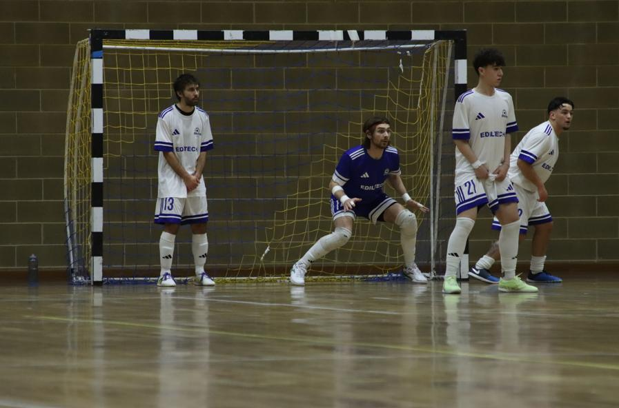

Gara sotto controllo sul 3-0, poi 2 gol riaccendono il Martignacco. Ripresa tiratissima fino al libero di Fusco che vale il sorpasso in testa
Solito Manzano. Primo tempo che inizia alla grande con un 3-0 meritato. Il Martignacco è bravo a sfruttare gli errori locali e a portarsi sul 2-3 prima della sirena. Ripresa tiratissima dove i seggiolai reggono. Il 4-2 di Tancos a 8’ dalla fine fa tirate un sospiro di sollievo, ma la squadra di Jovic si rifà sotto sul 3-4 con il portiere di movimento. Finale sudatissimo fino al libero di Fusco che mette in ghiaccio i 3 punti e consente il sorpasso sul Palmanova per il primo posto in classifica.
PRIMO TEMPO – Prima occasione nitida per il Martignacco, ma dalla ripartenza nasce il vantaggio del Manzano. Sovdat viene lasciato libero in mezzo, buono l’intervento di Pozzatello che innesca la ripartenza di Fusco sul lato. Il pivot avanza fino al limite dell’area e batte Flaugnacco nell’angolino basso: 1-0 al 4’.
Il raddoppio è immediato: Leonardo De Giorgio pesca il neoentrato De Bernado con uno scavetto, il capitano riceve e calcia di prima al volo: Flaugnacco non può nulla: 2-0.
Gli ospiti reagiscono col rasoterra di Quaino, un rimbalzo fa prendere una traiettoria imprevedibile al pallone e Pozzatello è attento nel metterlo in angolo. I seggiolai sono comunque più in palla: Leonardo De Giorgio riparte in solitaria e viene stoppato dal tuffo di Flaugnacco. Il tris arriva al 9’: Polidori mette una palla tesa in area da rimessa laterale, puntuale l’appoggio di Lorenzo De Giorgio: 3-0.
Il Martignacco non va allo sbaraglio e confeziona comunque situazioni pericolose. Oukhrib va via in mezzo e sbatte sulla grande uscita di Pozzatello. Sul corner seguente ancora il 10 ospite che cerca la porta in più tentativi, alla fine riesce a mettere un pallone sul secondo palo per Colle che accorcia le distanze: 1-3.
La squadra di casa spinge per tornare a +3: il più pericoloso è Klejdi Zharri che ha tre occasioni nitide, in una di queste riesce anche a saltare il portiere senza concludere in modo efficace. A 3’ dalla sirena palla gol anche per Tancos che scheggia il palo su rimessa.
Si entra nell’ultimo minuto quando una palla persa dal limite apre la strada a Oukhrib che fa 2-3. Con due episodi il Manzano compromette una partita che era sotto controllo.
SECONDO TEMPO – Martignacco in palla, galvanizzato dalle possibilità di rimonta, che sfrutta la qualità di Sovdat e Ourkrib, oltre alla fisicità del pivot Chiavone. Manzano più timido, scottato dai 2 gol subiti, ma comunque lucido e attento in fase difensiva. Sono diversi gli anticipi, i recuperi e le chiusure che mantengono il vantaggio locale. Il Martignacco riesce ad andare al tiro trovando sempre un Pozzatello sicuro che trattiene i tiri e non lascia possibilità in ribattuta.
La squadra di Sironi e Movio è comunque presente in fase offensiva: buone occasioni con Leonardo De Giorgio, De Bernardo, Iurlaro (addosso al portiere subentrato Aka in uscita) e Lorenzo De Giorgio, questo manca l’appuntamento sul secondo palo dopo il bel diagonale del fratello.
Al 12’ buona chance su punizione dal limite per il Martignacco, Pozzatello para in spaccata la conclusione di Sovdat. Un momento importante perché da lì a poco il Manzano riesce a tornare a +2: conclusione di De Bernardo parata sul primo palo da Aka, palla che rimane lì, preda di Tancos che fa 4-2.
Partita sempre aperta con un’occasione limpida per parte: il tandem Pascale-Lorenzo De Giorgio per il Manzano, e Chiavone per gli ospiti che manda fuori di poco.
Negli ultimi 5’ mister Jovic si gioca il portiere di movimento, la mossa paga perché al 16’ Busana viene liberato in area per il gol del 3-4.
La squadra di Sironi e Movio è costretta ad affrontare l’ennesimo finale di gara al cardiopalma di questa stagione. A 1’ dalla fine Colautti è ben piazzato per il tiro, ma la sua conclusione è troppo morbida. Sulla ripartenza arriva il fallo di Quaino, espulso per secondo giallo, Martignacco con l’uomo in meno e con un tiro libero contro. Dai 10 metri va Fusco che spiazza Aka e regala un po’ di sollievo ai compagni: 5-3 finale.
Manzano ora primo in classifica a +1 sul Palmanova. Le due contendenti hanno già osservato il turno di riposo, queste ultime 5 giornate saranno decisive. Inizia il tour de force, sabato prossimo alle 19.30 contro l’Aquileia dell’ex Asquini. Vista l’indisponibilità del campo di Grado si giocherà a Palmanova. Una partita difficile contro una squadra che ha sempre venduto cara la pelle e cha ha pareggiato 4-4 con il Palmanova.